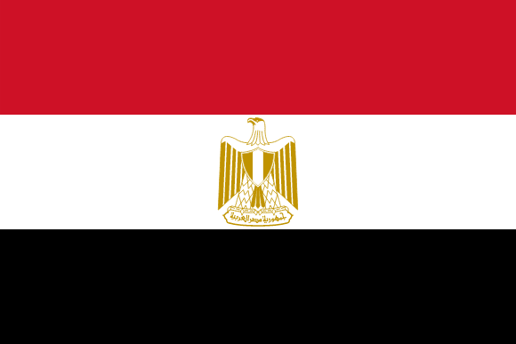

Washington, D.C. is the capital of the United States of America. Often called "The District," Washington, D.C. is home to the three branches of the federal government: the Capitol, White House and Supreme Court.

Athens is the capital of Greece, and it is one of the most historically significant cities in the world. Athens is known as the birthplace of democracy and home to some of the most significant philosophers, is still dominated by 5th-century BC landmarks, including the Acropolis.
Cairo is the capital of Egypt, and one of the largest and oldest cities in Africa, having stood for more than 1,000 years on the banks of the Nile. Just outside the city, people can visit Giza, the site of the iconic pyramids and Great Sphinx, dating back to the 26th century BC.
Beijing is the capital of China, and despite being a modern metropolis known for its cutting-edge technology, it has history stretching back 3 millennia. In addition to skyscrapers, ancient sites such as the grand Forbidden City complex, which was the imperial palace during the Ming and Qing dynasties, can be found all over the city.